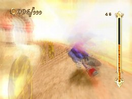
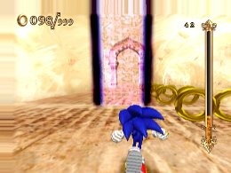
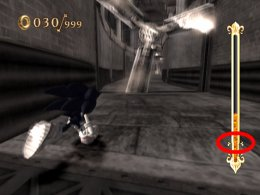
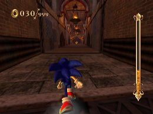

スピードブレイク、タイムブレイク活用法
応用編
スピードブレイク、タイムブレイク共に使用時と同じボタンを再度押すことで、キャンセルできる要素があります。
このキャンセルを上手く使いこなすことで、より活用の幅を広げることができます。
特にスピードブレイクは、一部破壊できない障害物があるとそこで止まってしまうことや、ルートが途切れた場所ではそのまま落下してしまうなど、溜まったソウルゲージを一度に使い切れる場所は限られており、キャンセルは必須と言えます。

スピードブレイクを使い切ったときは徐々に元の速度に、キャンセルでは一気に元の速度にもどる
マップの構成によってキャンセルを行うタイミングは変化しますが、おさえておきたいポイントとしては、タイムブレイク、スピードブレイクを使用できる最低ソウルゲージ量（１回分）を残した状態でキャンセルを行うことが挙げられます。
最低ソウルゲージ量を残しておくことで、予想外のアクシデントにも対応でき、ゲームプレイに余裕が持てるようになります。

ソウルゲージの両脇にある飾りが１回分の目安
スーパープレイ
サンドオアシス
スペシャルチャレンジ ツボを５個こわせ
スピードブレイクを利用してラスト３個のツボを一気に破壊します。
【装備スキル一覧】
チャージャー オールラウンダー クイックハイステップ クイックエア ワープブースト ハイパースピードアップ ランディングブースト ファイヤータックル キャンセルブースト ファイヤーゲイズ スプラッシュジャンプ ロケットジャンプ Ｈ・メガエキスパンズ ホーミングリカバリー エキスパートアタック クイックジャンプ イージススライダー ハイパースキマー ハイパーサージ ハードブレーキ Ｈパールコレクター リングボーナス ワープダッシュ エキスパートドリフト ホーミングボーナス チェインボーナス マッハグラインド クレストオブウィンド
 RSS
RSS